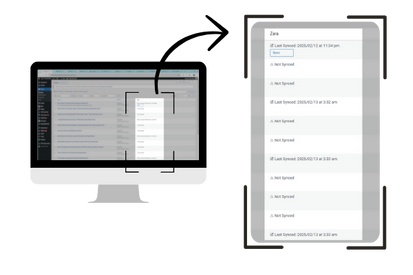

Your site, answering questions about itself.
Visitors type what they're looking for. Zara finds the right posts and pages and replies in plain language, using OpenAI and a Pinecone vector index of your content.
Search that understands what people mean
Keyword search fails when visitors don't use your exact words. Zara matches by meaning and answers from your own content.
Conversational answers
Replies in natural language and links to related pages, so visitors stay on your site longer.
Grounded in your content
Retrieval-augmented generation (RAG) means answers come from the posts and pages you've indexed.
You choose what's indexed
Pick which posts and pages Zara learns from, and see each one's sync status from the dashboard.
Embed anywhere
Drop the [chat_widget] shortcode into a page section, or run it as a floating chat.
Tunable tone
Adjust settings like temperament and creativity so replies match your brand's voice.
Conversation log
Review what visitors asked in the admin page and spot gaps in your content.
From your posts to an answer in four steps
Index
Zara reads the posts and pages you select and splits them into passages.
Embed
Each passage becomes an OpenAI embedding stored in your Pinecone index.
Retrieve
A visitor's question is embedded and matched against the most relevant passages.
Answer
OpenAI writes a reply from those passages, with links to related pages.
See it on a real site

Install in a few minutes
- Download the pluginGet
Zara_v1.2.0.zipfrom the latest release. - Upload & activateIn WordPress, go to Plugins → Add New → Upload Plugin, choose the zip, then click Activate.
- Add your API keysOpen the Zara settings page and enter your OpenAI key and Pinecone key and host.
- Index your contentSelect the posts and pages Zara should learn from and sync them.
- Place the widgetAdd
[chat_widget]to any page or template.
Requirements
- WordPress5.7 or newer
- Tested up to6.7
- AI providerOpenAI API key
- Vector databasePinecone account
- LicenseGPLv2 or later
Common questions
How is Zara different from a live-chat plugin?
Live chat connects visitors to a person. Zara answers on its own, in real time, by searching your indexed content and writing a reply from it.
Which external services do I need?
An OpenAI account for embeddings and replies, and a Pinecone index for vector search. You enter both API keys in the plugin settings. Usage is billed by those providers.
Do I need to write code?
No. Everything is configured from the WordPress dashboard, and the widget is placed with a shortcode.
What about privacy?
Zara only processes the content you choose to index, so leave confidential pages out. Questions are sent to OpenAI to produce answers, so review the privacy terms of the services you connect and your obligations under GDPR or similar rules.
Can I change how Zara sounds?
Yes. Settings such as temperament and creativity shape the tone, and choosing which content is indexed controls what Zara knows.
Help visitors find what they came for
Free, open source, and running on your own API keys.